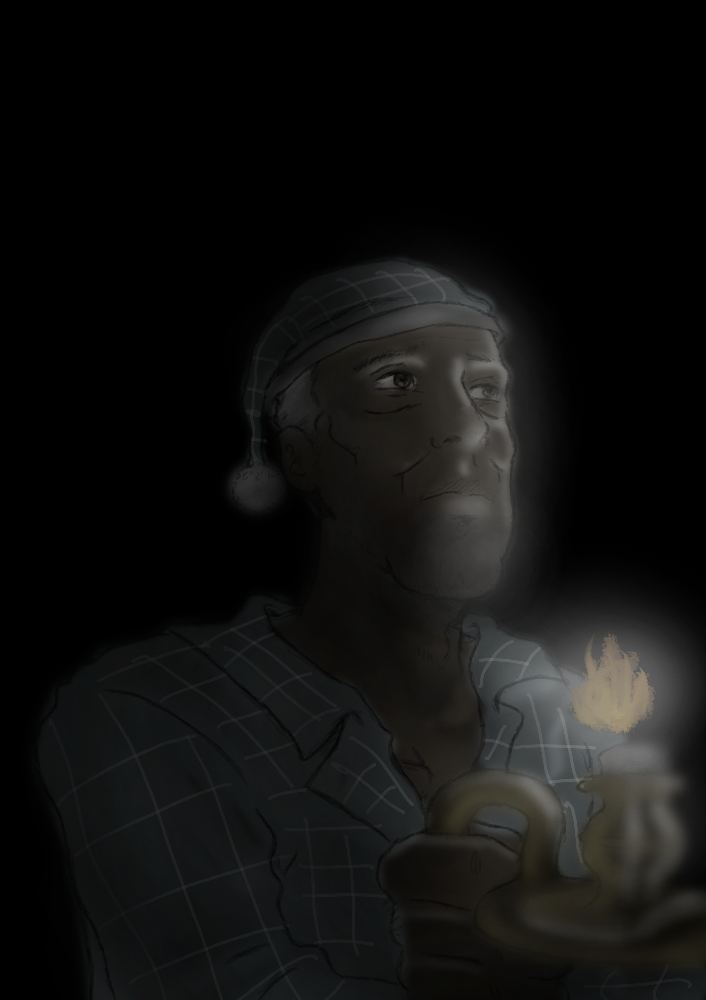

 El era un
gran soñador... Hasta que llegaron las pesadillas. Una casa rural
parecía buena idea al principio. Él, siendo un artista, creia que un
lugar en medio de la nada podría ayudarle a mejorar los bocetos que
en una libreta una vez garabateó. Aunque nadie lo entendiese esa
libreta fue especial, ya que en ella describía a su peor pesadilla...
Que en una noche la oscuridad hizo acto de presencia y con ella unos
golpes en la puerta se aseguraron de que el anciano nunca volviera a
dormir... o despertar... Una gran tormenta, o al menos al parecer,
provoca un apagón en la casa ¿Cómo podrá remediar tal accidente?
COMO SURGIÓ LA IDEA GENERAL
Aqui mostraremos los problemas, tecnicas, dificultades que ha tenido
cada miembro del grupo, empezando por Endika Arteta. ¿Cómo surgió la
idea de los personajes? Creimos que como pesadilla, un payaso era lo
indicado. Caracterizamos la nariz y la sonrisa ya que es lo que más
destaca en ese tipo de personajes incluyendo la pajarita, por eso la
necesidad de ocultarle gran parte de la cara, dejando a la vista las
caracteristicas dichas anteriormente. Su acompañante un osito de
peluche, fue una casualidad positiva, ya que se encontraba en su
cuaderno cuando boceteó el payaso. Creimos que un protagonista como
anciano seria el indicado, con su pijama de seda y su bastón, crearia
más tensión y angustia por su lentitud al andar. ¿Dificultades? Al
principio tube dificultades para poder encajar el estilo que se
pedia, pintar las texturas... ya que no sabia muy bien como encajar
cada pieza en su sitio. ¿Problemas? Que dichas texturas encajasen con
el tono de la historia. ¿Trabajo en equipo? Desde su punto de vista,
el equipo ha funcionado muy bien, no hemos tenido riña alguna,
siempre se han solucionado las cosas pacificamente. Al ser tres
personas tuvimos que distribuir muy bien el trabajo. Continuamos con
Paola Marquez ¿Cómo surgió la idea? La creación de la historia en un
ambiente alejado de la realidad, le daba un toque terrorífico, con
ello que la vivienda fuera una casa rural alejada en el bosque.
¿Dificultades? En un principio el amueblado de la casa, ya que tenia
que tener un toque rustico, viejo y apagado. Ademas de la
distribucion de la casa. Al principio me fue dificil modelar cada
personaje empezando por el payaso, ya que tenia que estar muy bien
caracterizado. Que las caracteristicas dichas anteriormente tuvieran
su protagonismo, fue un poco complicado pero no imposible. A la hora
de riggear cada uno de los personajes animables no fue facil, pero,
reto superado. ¿Problemas? Creo que uno de mis mayores problemas fue
ponerme de acuerdo con muchas de las ideas que tenian los demas
miembros del grupo. Pero no hay nada que no se pueda habalar y
solucionar. ¿Trabajo en equipo? Desde su punto de vista: Creo que
hemos funcionado muy bien como muy anteriormente ha dicho Endika,
pero yo si he tenido mis choques con uno de los miembros de grupo.
Pero siempre hemos sabido solucionar las cosas. Creo que como grupo
somos perfectos, porque estamos muyu bien distribuidos en tema de
boceteado, modelador y programador. Siguiendo con Giovanni Aguado
¿Cómo surgió la idea? | La idea original era muy distinta a la que
finalmente nos hemos acogido, en un inicio, el juego iba a tener
diferentes tipos de enemigos, que en cada partida se elegirian de
forma aleatoria. En la idea final, se pretende plasmar una batalla
contra tu peor pesadilla, el personaje principal (anciano), se
enfrenta asi a sus sueños, y como fin tiene por superarla sin caer en
el intentp, en este caso su temor por los payasos, que ya plasma en
sus diarios. En resumen, el juego te introduce en una pesadilla en la
que muy dificilmente lograrás escapar, pero que con esfuerzo se puede
superar, como en la realidad. ¿Dificultades?¿Problemas? Las
dificultades que he tenido a la hora de montar el videojuego, vienen
más ligadas a la gestion del propio motor gráfico que a la
programación en si, muchas veces las colisiones no responden
correctamente como deberían, y eso al final provoca que el jugador se
atasque en muchos rincones. En cuanto a la programación, es dificil
gestionar muchas variables a la vez, que se comuniquen entre varios
scripts y que funcionen de manera sincronizada, hay que probar el
juego con cada cambio que haces y pasartelo cada vez que lo pruebas ,
esto, es una dificultad añadida para el poco tiempo que se dispone.
¿Trabajo en equipo? Me considero una persona exigente, y como en
todo, se ha discutido cada una de las cosas que debía incluir en el
juego, conociendo como funciona el motor, he sido duro en algunos
aspectos como el modelado, texturizado y en los tiempos en los qie
debía recibir los trabajaos para meterlos lo antes posible, y poder
programar cuanto antes los eventos que suceden en el juego.
LOS PERSONAJES